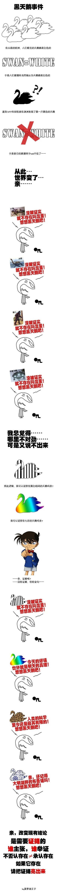
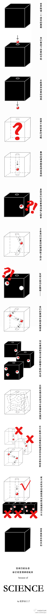
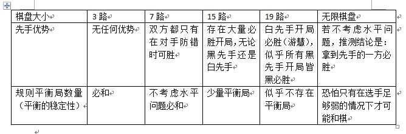
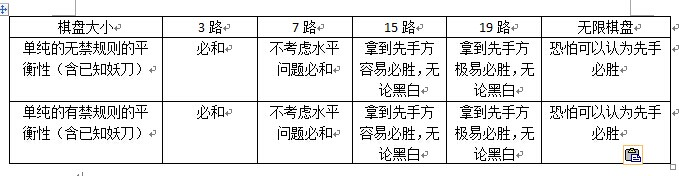

关于五子棋规则的研究
#1 关于五子棋规则的研究 作者：厦门小天 发表时间：2014-10-10 15:25:47
1，不知为何，今日突然灵感如潮，不做记录深感浪费，故不合时宜的发言图个痛快。
2，由于论坛冷清故发新闻版，若有不妥管理自便。
3，由于五子棋规则的争议颇多，故本文以具备实证数据的观点、推论为主，少量猜想为辅。
4，没时间整理成WORD慢慢修改，一次性发帖若有纰漏望海涵。
［ 灯塔连珠同学于 2014-10-10 20:18:24 时花20金币送鲜花一朵］
［ 灯塔连珠同学于 2014-10-10 20:18:24 时花20金币送鲜花一朵］
［ 灯塔连珠同学于 2014-10-10 20:18:24 时花20金币送鲜花一朵］
［ 灯塔连珠同学于 2014-10-10 20:18:24 时花20金币送鲜花一朵］
［ 灯塔连珠同学于 2014-10-10 20:18:24 时花20金币送鲜花一朵］
［ 小红眼镜同学于 2014-10-10 21:12:14 时花20金币送鲜花一朵］
［ 趁晨陈尘沉同学于 2014-10-12 11:30:25 时花20金币送鲜花一朵］
［ 趁晨陈尘沉同学于 2014-10-12 11:30:25 时花20金币送鲜花一朵］
#2 Re:厦门小天【==关于五子棋规则的研究==】 作者：厦门小天 发表时间：2014-10-10 15:32:27
由于本人倾向于实证主义，所以对证据及讨论基本规则比较注重。因此引入两则小漫画来表明作者实证思路的基本逻辑。


#3 Re:关于五子棋规则的研究 作者：厦门小天 发表时间：2014-10-10 15:40:08
“没有”是不需要证明的
比如你说“如意金箍棒”是存在的，我说不存在，你让我证明不存在，那我还真证明不了，即使我掘地三尺没有找到，那也不能排除掘地四尺能找到的可能，即使我满头大汗地把地球都掘遍了，然后你来了一句“会不会在火星上呢？”
与边界清晰的数学问题不同，五子棋中的“没有”是无法或者极难证明的，也是不需要证明的。持“没有”观点的一方可以什么都不用干就是默认正确的一方，直到持“有”观点的一方拿出了“有”的证明为止。你说手机辐射存在着引发脑瘤白血病的危险，我说不存在，这时应该由你来举证。全球科学界曾做过上百项手机辐射与脑瘤白血病相关性研究，结论不支持其中的相关性，你求证“有”不能成立，而我的“无”就是继续成立的。
很多坚持“有”的一方在举证不能的情况下会抛出“潜在的可能性”的说法………… 事实上您读完此文地球就毁灭的潜在可能性也不能说完全没有，但这种没有证据的纯粹想象中的可能性有意义吗？请参照上贴1图的黑天鹅。
#4 Re:关于五子棋规则的研究 作者：厦门小天 发表时间：2014-10-10 15:41:31
“没有”是不需要证明的
比如你说“如意金箍棒”是存在的，我说不存在，你让我证明不存在，那我还真证明不了，即使我掘地三尺没有找到，那也不能排除掘地四尺能找到的可能，即使我满头大汗地把地球都掘遍了，然后你来了一句“会不会在火星上呢？”
与边界清晰的数学问题不同，五子棋中的“没有”是无法或者极难证明的，也是不需要证明的。持“没有”观点的一方可以什么都不用干就是默认正确的一方，直到持“有”观点的一方拿出了“有”的证明为止。你说手机辐射存在着引发脑瘤白血病的危险，我说不存在，这时应该由你来举证。全球科学界曾做过上百项手机辐射与脑瘤白血病相关性研究，结论不支持其中的相关性，你求证“有”不能成立，而我的“无”就是继续成立的。
很多坚持“有”的一方在举证不能的情况下会抛出“潜在的可能性”的说法………… 事实上您读完此文地球就毁灭的潜在可能性也不能说完全没有，但这种没有证据的纯粹想象中的可能性有意义吗？请参照上贴1图的黑天鹅。
#5 Re:厦门小天【==Re:关于五子棋规则的研究==】 作者：厦门小天 发表时间：2014-10-10 16:30:45
棋盘：
1，在RIF规则下，15路棋盘的研究成果是我们最熟悉的，它的大致结论是：游慧白必胜，黑除了斜月、流星、瑞星、疏星等少数开局外都是黑必胜的。假如在RIF规则下增大棋盘会有什么影响呢？有两个直观的例子。
另外我记得流星、残月、名月等皆可在19棋盘下黑必胜，由于几年没碰棋生疏了，往知情者贴明证据。
结论：同在RIF规则下，虽然游慧依然是白必胜不变，但19路棋盘黑棋必胜开局增多。19路棋盘使RIF规则的平衡性下降。
2、那么缩小棋盘的话会怎么样呢？这个就容易多了，7路棋盘下任何开局都是平衡的，因为结果只能是和棋；13路棋盘是存在必胜开局，但必胜开局数量大弧度缩水。（这里的数据主要是为了证明规则的平衡性问题，故不讨论小棋盘的竞技意义，也不考虑由于对方太弱导致7路可胜的情况）
3、由以上可否推得“棋盘扩大导致黑优势扩大，棋盘缩小导致黑优势弱小”呢？答案是否定的。因为7路棋盘下白原本能必胜的游慧也无法必胜，同理无限棋盘下白游慧依然是必胜的，不存在棋盘扩大而黑反败为胜的情况。
可见棋盘缩小与扩大对双方皆可能产生影响，不特定针对黑棋或白棋。再加上一些只可意会的依据，推论是:

补充：1，本推论是在RIF规则下得出，暂不可推导到其他规则。2，规则客观存在的必胜必败结论，与因为水平问题产生的胜负应区分对待。3，本推论只为说明棋盘大小对先手的影响，对规则的平衡的稳定性的影响，关于竞技性等其他方面问题不做讨论。
#6 Re:关于五子棋规则的研究 作者：厦门小天 发表时间：2014-10-10 16:35:00
忘了补充，本文只考虑方形棋盘，对于3D棋盘，圆形棋盘，3线6向棋盘，不规则棋盘等等不作考虑。
［ 爱连珠恨五子棋网同学于 2014-10-18 3:58:36 时花250金币拍了你一板砖］
#7 Re:关于五子棋规则的研究 作者：继续沉醉 发表时间：2014-10-10 16:41:56
好不容易修炼成精了你却不玩了#8 Re:厦门小天【==Re:关于五子棋规则的研究==】 作者：厦门小天 发表时间：2014-10-10 16:56:35
同样在RIF规则下，棋盘的大小对规则，先手的影响是比较容易预测及证明的。但如果在山口、连换规则等等其他规则下，棋盘对先手、规则的影响是否与RIF规则相似呢？
直接要说明棋盘对新规则的影响是很困难的，因为除了山口规则外，其他新规则我们几乎一无所知。我们只能从熟悉的规则中提取实证数据。
因此，根据同样的思路，我们对单纯的无禁规则，以及单纯的有禁规则，包括已知的妖刀。我们得到了类似的线性数据。

补充：由于我们对这2个规则的研究程度远不如RIF深入，因此结论很可能存在偏差，但是棋盘由小到大对规则平衡性的线性规律性影响还是很清晰的。
基于无禁、有禁、RIF规则下，棋盘由小到大对规则平衡性规律性影响。我们有一定的依据推测：即便在其他未知或不熟悉的新规则下，棋盘大小与先手优势成正比，与规则平衡性成反比。
#9 Re:关于五子棋规则的研究 作者：厦门小天 发表时间：2014-10-10 17:17:45
从以上数据看，棋盘越大规则要平衡的难度也就越大，换句话说平衡局客观存在的数量就越少。这似乎跟我们预期的不大一样，因为我们可能希望通过扩大棋盘来增加变化量。
我想说的是：棋盘增大会削弱规则的平衡性是没有问题的，但希望通过扩大棋盘来增加变化量也并非绝无可能。假如能提出一个极具平衡基础的规则，即便是19路棋盘也可能拥有巨大的平衡局数量。打个不是很恰当的比方就是六合棋，它在25路棋盘下可能还是很容易平衡的。
另外简单提一点：有观点认为RIF规则白棋后期优势，若棋盘扩大将导致白必胜。关于这个问题：
首先以上RIF的实证数据已经表明棋盘扩大只会导致更多的黑必胜开局，与该观点直接不符。
其次棋盘扩大确实可能增大白棋后期的反击空间，但从数据看棋盘扩大的直接、确定性的影响是黑先手优势将被扩大，先手优势期将被延长，白棋后手反击的时间点将被延后，白棋拖到后手的难度增加，因此从逻辑上认为白必胜也有不妥之处。
最后，即便将“白后期必胜”的观点推导到其他规则，依然需要解释“实证数据”与“先手优势扩大”这两方面问题。
#10 Re:关于五子棋规则的研究 作者：厦门小天 发表时间：2014-10-10 17:18:33
先吃饭，晚上继续。望观者先勿回复，望管理酌情处理无关回复。#11 Re:关于五子棋规则的研究 作者：游戏人间 发表时间：2014-10-10 19:35:57
现在问题来了。。。#12 Re:关于五子棋规则的研究 作者：米兰 发表时间：2014-10-10 20:05:33
学挖掘机到底哪家最强？？#13 Re:关于五子棋规则的研究 作者：灯塔连珠 发表时间：2014-10-10 20:21:33
学挖掘机？山东蓝翔技工学校---网址 http://www.lxjx.cn/#14 Re:米兰【==Re:关于五子棋规则的研究==】 作者：絕版賭徒 发表时间：2014-10-10 21:55:11
中国福建找晓涵#15 Re:关于五子棋规则的研究 作者：华夏使者 发表时间：2014-10-10 22:46:44
怎么又要换规则?这样不太利于推广.小孩子还没弄明白现行规则就又要换了.有点扯#16 Re:关于五子棋规则的研究 作者：厦门小天 发表时间：2014-10-11 0:11:03
……………… 本来还有好多东西想写的，被你们这么一闹腾，写不下去了啊~~~
回灯塔：突然来感觉想写而已，没目的性。
#17 Re:关于五子棋规则的研究 作者：自来水 发表时间：2014-10-14 18:07:59
害怕不平衡而不敢谈扩大，只能跟着前人老路走。
不思考合理规则而谈扩大，那就会连路都走不稳。
#18 Re:关于五子棋规则的研究 作者：爱连珠恨五子棋网 发表时间：2014-10-18 4:05:51
还专业棋手，RIF规则是山口规则，就凭这一点，就可以否定此文的一切结论#19 Re:关于五子棋规则的研究 作者：周光乐 发表时间：2014-10-18 18:09:11
支持一下#20 Re:关于五子棋规则的研究 作者：爱连珠恨五子棋网 发表时间：2014-10-19 20:00:34
由楼上可见，不以事实为基础的歪理邪说还是有支持者的。